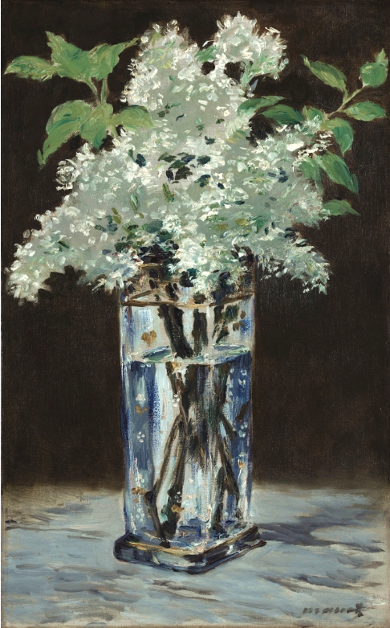

作品名 「白いライラック」
花言葉 「青春の思い出」「無邪気」「青春の喜び」
ライラック
「青春の思い出」
春に紫色・白色などの花を咲かせ、香りがよく、香水としても好まれ、世界中で愛されている花木です。ライラックの花はハートの形をしていて、フランスで白いライラックは青春のシンボルとされています。そのことから「青春の思い出」などの花言葉が生まれました。
白いライラック
エドゥアール・マネ
エドゥアール・マネは、19世紀のフランスの画家。近代化するパリの情景や人物を、伝統的な絵画の約束事にとらわれずに描き出し、絵画の革新の担い手となった。特に1860年代に発表した代表作『草上の昼食』と『オランピア』は、絵画界にスキャンダルを巻き起こした。印象派の画家にも影響を与えたことから、印象派の指導者あるいは先駆者として位置付けられる。
| 作品名 | 白いライラック |
| 作者 | エドゥアール・マネ |
| 制作年 | 1882年 |
| 種類 | {{}} |
| 寸法 | 42cm × 54cm |
| 所蔵 | 旧国立美術館 (ベルリン) |